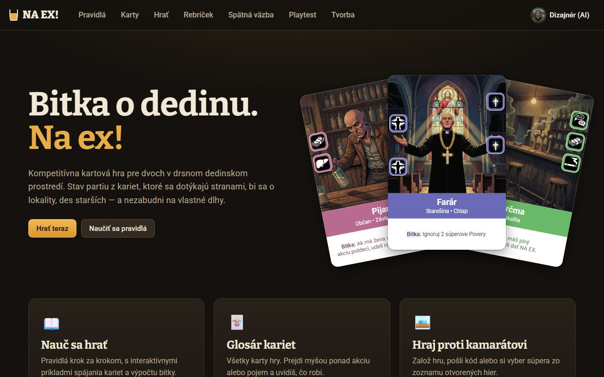
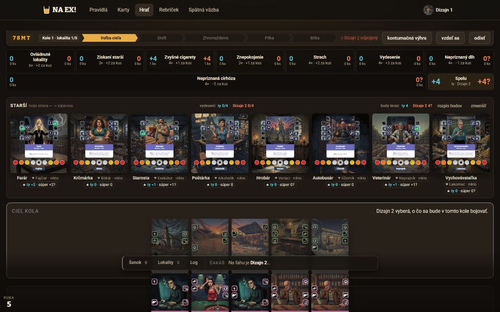
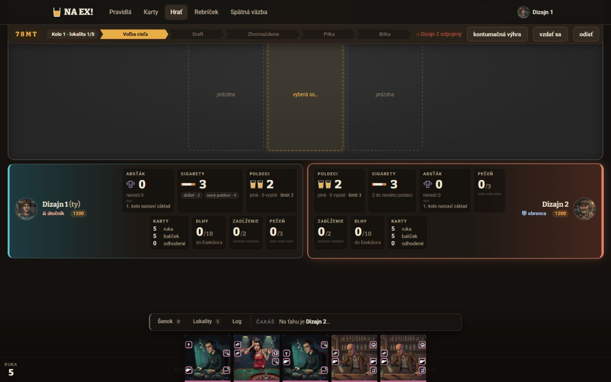
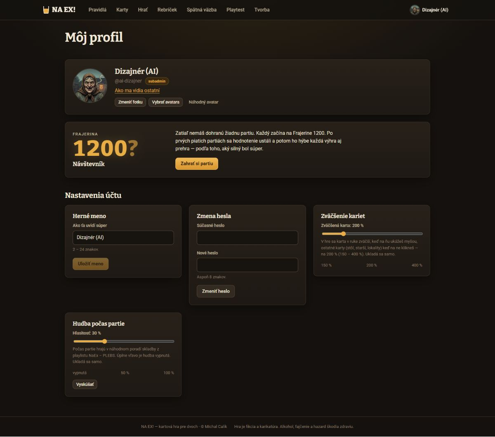

Cieľ: výber schémy v /profil (apps/web/src/stranky/Ucet.tsx, komponent Profil), ktorá sa uplatní na všetky stránky: domov, pravidlá, karty, hra, rebríček, spätná väzba, profil aj Tvorbu.
Verdikt: Áno, je to bežné a pre tento web to dáva zmysel. Odporúčam 4 tmavé schémy a 1 svetlú, predvolená ostáva Krčma (dnešný vzhľad). Hlavná práca však nie sú farby, ale pretokenizovanie: v CSS je mimo premenných 228 hex farieb a 106 rgba(). Bez toho by prepnutie schémy zmenilo len časť webu.
Líca kariet schéma nemení, pretože sú totožné s tlačou a farba variantu niečo znamená. Mení sa len všetko okolo nich: stôl, záblesk pri výbere, tiene a prázdne miesta.
1. Je to bežná prax?
Svetlá, tmavá a podľa systému je dnes štandard. Operačné systémy to majú od roku 2019 a web sa pýta cez prefers-color-scheme. Robia to napríklad GitHub, YouTube, Discord aj Slack, väčšinou s 2 až 3 voľbami.
Viac pomenovaných tém má menej aplikácií, ale je to bežné: GitHub má asi 9 tém (aj pre farbosleposť a vysoký kontrast), VS Code a Slack desiatky, Discord farebné témy.
V hrách je to kozmetika a niekedy odmena. Lichess a Chess.com ponúkajú témy šachovnice a pozadia, MTG Arena a Hearthstone obaly kariet a herné plochy. Tvar hracích prvkov sa tam nemení, vždy len to, čo je okolo nich. Presne to platí aj pre karty NA EX!.
Riziká: (1) Každá schéma je ďalší vzhľad, ktorý treba udržiavať, takže každý nový komponent treba overiť vo všetkých. Pomôžu sémantické tokeny a automatická kontrola kontrastu. (2) Snímky a návody vyzerajú pre každého inak. (3) Identita sa môže rozriediť, preto všetky schémy držia ten istý krčmový princíp: tmavý alebo papierový podklad a jeden teplý akcent.
Odporúčanie: spraviť to, ale v poradí najprv tokeny, potom schémy. Päť schém je primeraný počet. Predvolená ostáva Krčma, k tomu voľba „Podľa zariadenia“ (Krčma v tme, Jedálny lístok vo svetle). Farby hry, ktoré niečo znamenajú, sú vo všetkých schémach rovnaké: zelený stôl = tvoj ťah, tyrkys = ty, korál = súper, farby variantov kariet.
2. Súčasný stav (snímky z lokálneho servera)

Domov 1280 × 800: jantár nesie identitu (nadpis, hlavné tlačidlo, logo pohára). Líca kariet sú biele s pásom podľa variantu.

Herný stôl (partia 78MT, Voľba cieľa): fázy majú jantárovú aktívnu šípku. „Dizajn 2 odpojený“ je červený text s kontrastom 4,22 : 1.

Línia je sivá, keď čakáš (hra.css:952), a zelená, keď hráš. Panel „ja“ je tyrkysový, súperov korálový. Tieto významy musia platiť v každej schéme.

Profil: „Nastavenia účtu“ sú mriežka panelov. Panel „Farebná schéma“ sem patrí ako prvý, cez celú šírku.
3. Audit: čo bráni prepnutiu schémy
Inventúra farieb natvrdo
Počítané skriptom: hex a rgba() mimo riadkov --premenna: …. „Akcent“ = rgba(233,173,69,…), teda jantár prepísaný ručne. „Č/B“ = čierne a biele tiene a závoje, ktoré v tmavých schémach môžu zostať.
Súbor
hex
rgba()
z toho akcent
z toho č/b
Čo s tým
styles.css
28
4
2
1
Hlavné tlačidlo (gradient), hover, pole, hlásky, odznaky na tokeny
stranky/stranky.css
27
11
5
4
Skeletony, výzvy a nástenka na tokeny. Farby hodností Frajeriny (#e8cc4a…) ostávajú ako dátové farby
stranky/statistiky.css
21
9
2
1
Riadky tabuliek a +/− na tokeny. Medaily a grafy sú dátové farby (svetlá schéma dostane tmavšie odtiene)
hra/hra.css
91
61
10
32
Najviac práce: stôl, pokyn, hlásky, odtiene červeného textu. --ja, --su a --stol-* už sú premenné, len ich treba presunúť do schémy
admin/admin.css
27
3
1
2
Časť je náhľad tlače (#fff, ostáva), zvyšok na tokeny
playtest/playtest.css
5
2
0
0
Na tokeny
karta/karta.css
29
16
0
9
Ostáva. Líce karty je vzhľad z tvorcu
Spolu
228
106
20
49
142 unikátnych hex. Bez karta.css 199 hex a 90 rgba(), ktoré treba zlúčiť do približne 25 sémantických tokenov
Nálezy
#
Oblasť
Problém
Dôkaz
Závažnosť
A1
Tokeny
Farby sú natvrdo mimo :root, takže schéma by prepla len pozadie, plochy a text. Hlavné tlačidlo, hlásky, stôl a pokyn by zostali krčmové.
styles.css:121–129 (gradient tlačidla), styles.css:234–248 (hlásky), hra.css:952–971 (stôl), inventúra vyššie
vysoká
A2
Tokeny
Jantár je 20× prepísaný ako rgba(233, 173, 69, x), takže žiary a podfarbenia by po zmene akcentu ostali jantárové.
--cervena #d0563f ako text na --plocha má 4,22 : 1. Web to rieši ručne deviatimi inými odtieňmi červeného textu (#ff9d88, #ffb8a3, #ffc2b4, #ff8f78, #ff8a73, #ff9c8a, #ff6b5b, #ec8a75, #f19a86), spolu 16 výskytov.
Okraj polí --okraj-svetly #57483a má proti ploche 1,99 : 1 (WCAG 1.4.11 chce pre hranice ovládacích prvkov 3 : 1), takže prázdne pole heslá splýva.
styles.css:169–170, snímka profilu (Zmena hesla)
stredná
A7
Tokeny
Farby sú natvrdo aj v TSX: FARBA_AKTIVNA = "#5cc0cf" (duplikát --ja) a "#8a7a62" v štatistikách.
hra/Scorecard.tsx:29, admin/Statistiky.tsx:48
stredná
A8
Schéma
color-scheme: dark je pevne v :root. Pri svetlej schéme by posuvníky a natívne prvky ostali tmavé.
styles.css:21
nízka
A9
Načítanie
CSP povoľuje len script-src 'self', takže skript, ktorý nastaví schému ešte pred Reactom, nemôže byť inline. Bez neho svetlá schéma pri načítaní na chvíľu blikne tmavou.
Neaktívne hlavné tlačidlo („Uložiť meno“) je jantár s opacity .45. Vo svetlej schéme by vyzeralo ako aktívne.
styles.css:114, snímka profilu
nízka
4. Päť schém podľa Sanza Wadu
Ako čítať väzbu na Wadu.A Dictionary of Color Combinations (Seigensha, 348 kombinácií) používa názvy farieb podľa Ridgwaya, napríklad Cinnamon Buff alebo Vistoris Lake. Pri každej schéme uvádzam Wadove farby, z ktorých vychádza. Čísla kombinácií neuvádzam: knihu nemám pri ruke a nechcem si ich vymýšľať. V registri farieb na konci knihy ich nájdeš podľa názvu. Hex hodnoty sú moje odvodeniny pre obrazovku (stmavené alebo zosvetlené kvôli kontrastu WCAG), nie tlačové vzorky. Pravidlo pre všetky schémy: jeden teplý akcent, tlmené plochy, nič neónové.
Kontrast je vypočítaný podľa WCAG 2.2 (relatívny jas). Text musí mať aspoň 4,5 : 1, hranice ovládacích prvkov aspoň 3 : 1. Hodnoty pre svetlú schému sú nižšie, lebo tmavý text na papieri nemá taký rozsah.
Z Wadu: Pôvodná paleta webu, nie je prevzatá z Wadu. Vo Wadovom slovníku jej zodpovedá trojica Vandyke Brown (drevo) · Cinnamon Buff (jantár) · Brick Red (tehlová). Oproti dnešku mení len 3 hodnoty kvôli kontrastu (slabý text, červený text, okraj polí).
Slabý text na ploche 2 (najhorší prípad) slaby / plocha-2
4,78 : 1
✓ AA
Odkaz / akcent na ploche akcent-text / plocha
8,74 : 1
✓ AA
Text na hlavnom tlačidle na-akcente / akcent
8,35 : 1
✓ AA
Chyba (text) na ploche cervena-text / plocha
5,62 : 1
✓ AA
Úspech na ploche 2 zelena / plocha-2
7,23 : 1
✓ AA
Info na ploche info / plocha
9,18 : 1
✓ AA
Ty na ploche ja / plocha
8,22 : 1
✓ AA
Súper na ploche su / plocha
6,16 : 1
✓ AA
„TVOJ ŤAH“ na stole stol-moj-text / stol-moj
8,73 : 1
✓ AA
Okraj poľa (hranica) okraj-pole / pole
3,39 : 1
✓ AA
Hlavné tlačidlo na pozadí (hranica) akcent / pozadie
9,43 : 1
✓ AA
2. Polnoc na dedine tmavá · data-schema="noc"
Indigová noc a teplé svetlo lampy za oknom krčmy.
Z Wadu: Hlboká modrá Indigo Blue / Dark Tyrian Blue (pozadie a plochy) s teplým Cinnamon Buff (akcent) — typická Wadova dvojica studená tma + teplý okr; chyba tónom Old Rose.
Slabý text na ploche 2 (najhorší prípad) slaby / plocha-2
4,97 : 1
✓ AA
Odkaz / akcent na ploche akcent-text / plocha
6,08 : 1
✓ AA
Text na hlavnom tlačidle na-akcente / akcent
6,67 : 1
✓ AA
Chyba (text) na ploche cervena-text / plocha
6,20 : 1
✓ AA
Úspech na ploche 2 zelena / plocha-2
4,94 : 1
✓ AA
Info na ploche info / plocha
6,29 : 1
✓ AA
Ty na ploche ja / plocha
5,14 : 1
✓ AA
Súper na ploche su / plocha
4,81 : 1
✓ AA
„TVOJ ŤAH“ na stole stol-moj-text / stol-moj
5,25 : 1
✓ AA
Okraj poľa (hranica) okraj-pole / pole
4,28 : 1
✓ AA
Obrys hlavného tlačidla (hranica) akcent-tmavy / pozadie
5,38 : 1
✓ AA
5. Mockupy: ako by to vyzeralo
Výrezy webu nakreslené výhradne tokenmi schémy, s reálnym textom zo stránok. Prepínač prepne všetky ukážky naraz. Rovnako fungujú aj dlaždice v mockupe profilu, dá sa na ne kliknúť. Písmo v ukážke je Bitter alebo Roboto, ak ich máš nainštalované, inak Cambria alebo Georgia a systémové písmo.
A · Hlavička a domov
NA EX!PravidláKartyHraťRebríčekSpätná väzbaDizajn 1
Bitka o dedinu. Na ex!
Kompetitívna kartová hra pre dvoch v drsnom dedinskom prostredí. Stav partiu z kariet, ktoré sa dotýkajú stranami, bi sa o lokality, des starších — a nezabudni na vlastné dlhy.
Hrať terazNaučiť sa pravidlá
PijanObčan • Závislák
Bitka: Ak má žena akciu poldeci, udeľ ranu.
FarárStarešina • Chlap
Bitka: Ignoruj 2 súperove Povery.
KrčmaLokalita
Ak máš plný poldeci, môžeš dať NA EX.
Nauč sa hrať
Pravidlá krok za krokom, s interaktívnymi príkladmi spájania kariet a výpočtu bitky.
Glosár kariet
Všetky karty hry. Prejdi myšou ponad akciu alebo pojem a uvidíš, čo robí.
Hraj proti kamarátovi
Založ hru, pošli kód alebo si vyber súpera zo zoznamu otvorených hier.
B · Herný stôl (tvoj ťah, voľba cieľa)
78MTKolo 1 · lokalita 1/5
Voľba cieľa
Draft
Zhromaždenie
Pitka
Bitka
○ Dizajn 2 odpojenývzdať sa
TVOJ ŤAH
HráčObčan
Pitka: +1 poldeci
KurvaObčan • Žena
Bitka: rana za Dlh
←
KrčmaLokalita · vybraná
Ak máš plný poldeci, môžeš dať NA EX.
→
ÚžerníkObčan • Chlap
Bitka: Dlh +1
prázdna
Dizajn 1 (ty)
⚔ útočník1200
CIGARETY3
POLDECI2
DLHY0/10
PEČEŇ0/3
Dizajn 2
⛨ obranca1200
POLDECI2
CIGARETY3
DLHY0/10
ZADĹŽENIE0/2
Šenok0Lokality5LogTVOJ ŤAHVyber lokalitu, o ktorú sa bude bojovať.
C · Rebríček
Rebríček
Poradie hráčov podľa Frajeriny. Funguje ako šachové Elo: za výhru nad rovnako silným súperom získaš asi 16 bodov a on ich toľko stratí.
#
Hráč
Hodnosť
Frajerina
Partie
Posledná
1
Michal
Postrach dediny
1824
41
+14
2
Teta Gizka bot
Veľký frajer
1611
96
−9
3
Dizajn 1 (ty)
Frajer
1472
12
+17
4
Rapavý Fero bot
Štamgast
1318
88
−16
5
Dizajn 2
Návštevník
1200?
3
−17
D · Profil: výber schémy (nový panel v „Nastavenia účtu“)
Nastavenia účtu
Herné meno
2 – 24 znakov.
Uložiť meno
Zväčšenie kariet
Zväčšená karta: 200 %
✓ Herné meno je uložené.
✕ Heslo musí mať aspoň 8 znakov.
Všetkých päť naraz
Rovnaký výrez v každej schéme na porovnanie. Tento pohľad funguje aj bez JavaScriptu.
Predpoklad pre všetko ďalšie. Nahradiť 199 hex a 90 rgba() (bez líca karty) približne 25 sémantickými tokenmi. Výsledok musí vyzerať pixel po pixeli rovnako, overí sa snímkami pred a po.
Krčma, Polnoc na dedine, Vínna pivnica a Tabak. Ukážka je v mockupoch (prepínač aj dlaždice v profile). Všetky štyri sú tmavé, takže tiene, ilustrácie a stôl fungujú bez úprav a mení sa len farebný odtieň.
Rieši
samotné zadanie. Stavia na N2.
Zmena
Bloky [data-schema="…"] v novom súbore apps/web/src/schemy.css. Panel „Farebná schéma“ ako prvý v .profil-nastavenia cez celú šírku: <fieldset> s natívnymi rádiami, dlaždica s náhľadom kreslená tokenmi danej schémy. Prepnutie je okamžité, s prechodom 200 ms (pri prefers-reduced-motion bez prechodu).
Mobil
Dlaždice v mriežke auto-fill, minmax(130px, 1fr), na telefóne 2 v rade. Cieľ kliku je celá dlaždica (≥ 44 × 44 px). Prepne sa aj <meta name="theme-color">, teda farba lišty prehliadača.
Náročnosť
stredná (asi pol dňa na schémy a panel, server pridá stĺpec schema rovnako ako lupa a hudba)
Súbory
nový schemy.css, stranky/Ucet.tsx, stranky/stranky.css, Layout.tsx (nastaví data-schema), index.html a nový public/schema.js, server: auth.ts, api.ts, db.ts
N4 · Odvážnejší smer: svetlá schéma „Jedálny lístok“ a voľba Podľa zariadenia
Krémový papier ako jedálny lístok vo výčape: sépiový text, okrový akcent, tehlová chyba. Identitu nezrieďuje, krčma je aj cez deň. Je to ale iný režim, nie len iný odtieň, preto ho oddeľujem od N3.
Rieši
hranie cez deň a na mobile vonku, ľudí, ktorým tmavé stránky unavujú oči, a voľbu „Podľa zariadenia“ (prefers-color-scheme).
Zmena
Okrem tokenov treba: color-scheme: light, mäkšie tiene (--tien), biele líca kariet dostanú jemný obrys (--karta-tien), inak splynú s papierom. Dátové farby (medaily, hodnosti Frajeriny) dostanú tmavšie odtiene. Neaktívne tlačidlo cez --plocha-3 a --slaby namiesto priehľadnosti (A10). Ilustrácie ostávajú tmavé, na papieri pôsobia ako fotky v ráme, čo je v poriadku.
Mobil
Najväčší prínos práve tu (slnko). Treba overiť pokyn a ruku v hre, ktoré majú tmavé závoje rgba(14, 11, 8, …) (hra.css:1279–1290).
Náročnosť
veľká (asi 2× tmavá schéma: prejsť 49 čiernych a bielych tieňov a závojov a otestovať herný stôl vo všetkých fázach)
Súbory
ako N3 a k tomu hra/hra.css (závoje a tiene), stranky/statistiky.css (dátové farby), karta/karta.css (len tieň okolo líca, nie líce)
7. Ako to spraviť tokenmi (bez kódu do repa, len smer)
Vrstvy
Schéma = blok premenných na <html data-schema="noc">. Krčma zostane aj ako :root, takže bez atribútu web vyzerá ako dnes.
Sémantické tokeny (--plocha, --akcent-text, --chyba-plocha…) používajú komponenty. Komponent nikdy nepíše hex.
Odvodené priehľadnosti a podfarbenia sa počítajú cez color-mix() zo sémantických tokenov, takže sa schéme prispôsobia samy.
Herné a dátové farby (--ja, --su, zelený stôl, medaily, stupnica starších z packages/tvorba/src/geometria.ts:120) majú v každej schéme rovnaký odtieň. Mení sa len svetlosť, aby prešiel kontrast.
Pozor: odvodené tokeny cez var() sa počítajú na prvku, kde sú deklarované. Ak sú na :root a schéma je tiež na <html>, je to ten istý prvok, takže to funguje. Schému preto dávať vždy na <html>, nie na <body>.
Uloženie a načítanie bez bliknutia
Server: stĺpec pouzivatelia.schema TEXT (hodnoty krcma | noc | vino | tabak | papier | auto), PATCH /profil { schema } s overením zo zoznamu, rovnako ako lupa a hudba (packages/server/src/auth.ts:244).
Klient: po prihlásení Layout nastaví document.documentElement.dataset.schema a hodnotu skopíruje do localStorage (v aplikácii smie, na rozdiel od tohto reportu).
Bez bliknutia: CSP má script-src 'self', preto nie inline skript, ale malý public/schema.js načítaný synchrónne v <head> pred CSS. Ten prečíta localStorage a pri auto rozhodne cez matchMedia('(prefers-color-scheme: light)').
Návštevník bez účtu dostane predvolenú Krčmu alebo voľbu z localStorage, ak ju niekedy zmenil.
Výnimky: náhľad karty v tvorcovi, Tlač (admin/Tlac.tsx) a reporty Playtestu (vlastný iframe) schému nepreberajú.
Karty a schéma
Líce karty schéma nemení: biele líce, pás vo farbe variantu, ikony akcií, bodovacia karta (karta.css, BodovaciaSvg.tsx, farby z tvorcu). Dôvody: (1) karta na webe má byť zhodná s vytlačenou, (2) farba variantu nesie význam (Starešina, Občan, Lokalita) a hráči sa ju učia, (3) tvorca musí vidieť to, čo pôjde do tlače. Schéma mení to, čo je okolo karty: stôl, záblesk pri výbere (--akcent), tieň (--karta-tien) a prázdne miesto. Rub karty tiež ostáva, je súčasťou balíčka.
Kontrola kontrastu
Pridať do npm test malý test, ktorý načíta schemy.css, pre každú schému vypočíta páry z tabuliek v časti 4 a zlyhá pod 4,5 : 1 (text) alebo 3 : 1 (hranice). Tak sa nová schéma alebo zmena tokenu nedostane na web s nečitateľným textom.
8. Odporúčané poradie
N1 hneď. Hodina práce, oprava prístupnosti, ktorá platí aj bez schém.
N2 ako samostatný commit, ktorý nemení vzhľad. Overiť snímkami pred a po (domov, stôl vo všetkých fázach, profil, rebríček, Tvorba).
N3: štyri tmavé schémy a panel v profile. Hodnoty sú v časti 4, kontrast prejde vo všetkých.
N4 až keď sa ukáže, že hráči svetlú chcú, alebo ak ju Michal chce kvôli hraniu na mobile cez deň.
9. Otázky na Michala
Zadarmo alebo ako odmena? Všetky schémy hneď, alebo niektoré odomknúť hodnosťou (napr. Vínna pivnica od Štamgasta, 1300)? Je to UX otázka, ale mení výzor dlaždíc (zámok).
Svetlá schéma áno alebo nie? Je to najviac práce (N4). A ak áno: má byť herný stôl vo svetlej schéme tiež svetlý, alebo ostane tmavé „súkno“ uprostred papiera?
Názvy: Krčma, Polnoc na dedine, Vínna pivnica, Tabak, Jedálny lístok. Sedia, alebo chceš krčmovejšie a vtipnejšie?
Wada presne: stačí inšpirácia názvami farieb, alebo chceš, aby každá schéma zodpovedala konkrétnemu číslu kombinácie z knihy? Na to by som potreboval čísla z tvojho výtlačku a hodnoty by som potom doladil.
Tvorba: má schéma platiť aj v Tvorbe a Playteste (admin)? Navrhujem áno, s výnimkou náhľadu karty a Tlače.